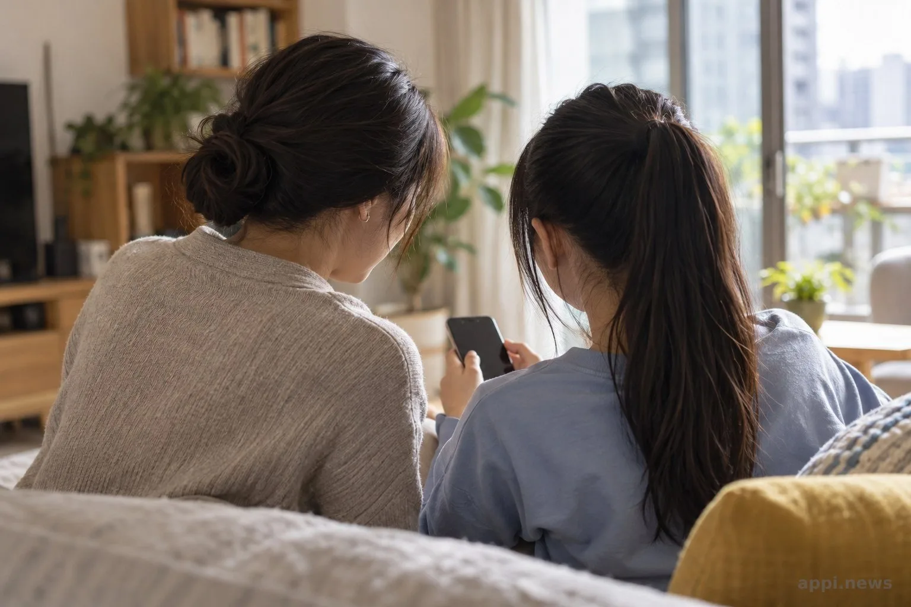
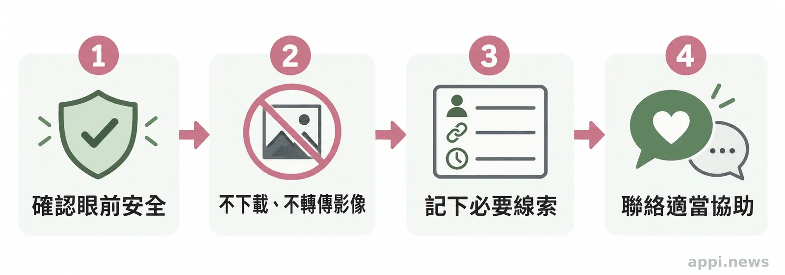
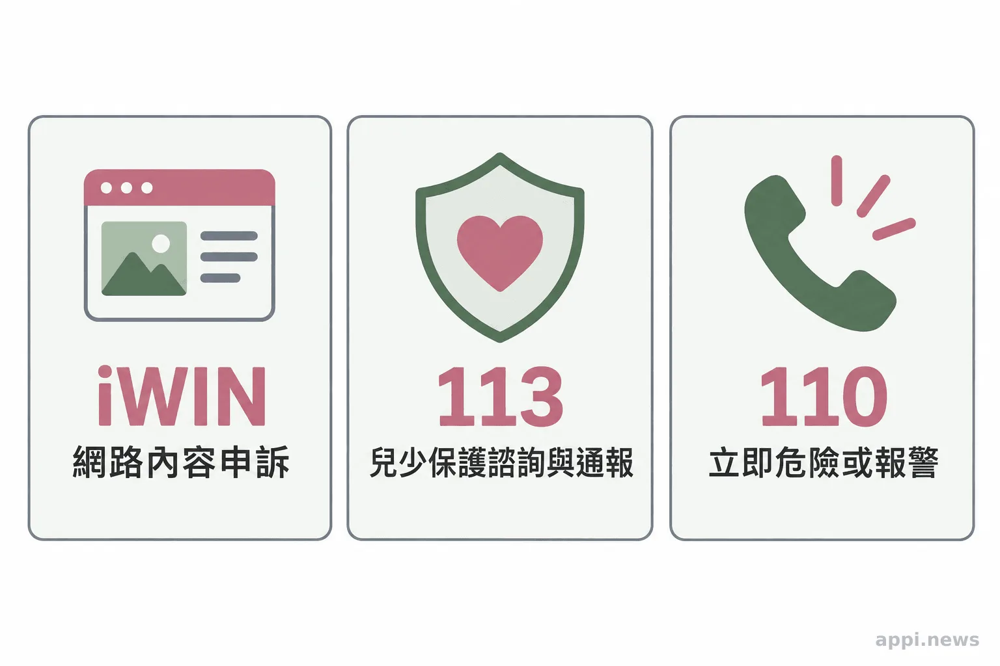

孩子遇到網路誘騙或影像威脅，家長和老師怎麼陪？
陌生帳號可能先以關心建立信任，再要求保密、轉往私訊或索取影像。家長、老師與志工可以先聆聽、確認安全、不轉傳影像，並陪孩子聯繫 iWIN、113 或 110。
孩子收到陌生帳號訊息，起初可能只是聊天、稱讚或關心，後來對方要求保密、改用私訊，甚至索取影像或以散布相威脅。這些互動可能涉及網路誘騙或數位性暴力，兒童與青少年都可能遇到。當孩子願意透露時，大人先聽、先確認安全，再陪他求助；曾經回覆訊息或傳送影像，都不是責備孩子的理由。

一、網路誘騙常從關心與信任開始
對方可能先頻繁聊天、表現理解，再要求保密、轉到較私密的管道，接著索取個人資料或影像，也可能以威脅控制孩子。這些過程不一定依固定順序出現，單一訊號不能用來判定整件事。
孩子突然避開訊息、顯得焦慮，或提到有人要求不要告訴家人，都是適合溫和關心的時刻；這些變化本身也不能證明孩子遭遇剝削。網路平台與互動方式持續變化，相關資料採用的名詞與界定也可能不同，因此這些訊號只能協助大人開啟對話，不能據此推定個別遭遇或法律責任。可以先問：「最近有沒有誰讓你覺得不舒服？你想先說多少都可以。」比起立刻檢查手機或追問細節，讓孩子知道大人願意聽、遇到狀況可以回來求助，更能保留對話的空間。
《兒童及少年性剝削防制條例》將兒少性影像相關的拍攝、散布等行為納入規範，也禁止公開足以辨識被害人身分的資訊。法律如何適用仍須由權責機關依個別事實判斷；家長、老師與志工不必自行查案或認定責任，發現疑慮即可詢問正式管道。
二、遭到影像威脅時，先讓孩子安全求助
可以。孩子是否曾回覆、赴約或傳送影像，都不代表他應為剝削或威脅負責；大人可以停止責問，先了解孩子現在是否安全。
影像可能被要求拍攝或傳送，也可能在事後被拿來威脅孩子繼續配合。不要要求孩子把影像傳給家長或老師「確認」，也不要下載、截圖、轉寄或公開。可以記下帳號名稱、相關網址與發生時間等必要線索，再詢問警方或專業人員如何提供資料。若影像已在網路出現，轉傳只會讓更多人接觸內容；應把處理交給適當的機關與平台。

三、家長、教師與志工可以建立可求助的關係
平時談網路交友、個人資料、影像隱私與求助對象，讓孩子知道遇到不舒服的要求可以拒絕，也可以向信任的大人求助。隱私設定值得定期檢視，但它無法防止所有截圖或轉傳，不能把防範責任全放在孩子身上。
孩子開口時，先聽他願意說的部分，問清楚眼前有沒有立即危險，再一起決定要找哪個大人或單位。避免質問「為什麼要回他」或逼孩子反覆描述，也不要承諾絕對保密；可以清楚說明，為了保護安全，可能需要找合適的專業人員幫忙。若孩子暫時不想多說，先讓他知道對話可以稍後繼續，並保持可聯絡。
民間團體、志工與支持者可以協助孩子找到可信任的大人、陪同查詢正式資源，並留意不在群組或社群散播身分與影像。調查、法律判斷及保護措施應交由權責機關處理。學校與社區平時也可把通報分工和聯絡方式放在容易找到的地方，讓慌亂時不必從頭搜尋。
台灣微光希望關懷協會在官網介紹，工作方向包括陪伴受虐、逆境與脆弱處境的兒少。協會曾透過展覽與論壇，分享兒少陪伴工作並討論受虐兒與脆弱家庭需要的支持；關心協會工作的讀者，可以從協會活動紀錄了解這些公開資訊。家長、教師、志工與支持者也能先協助傳遞 iWIN、113 等正式求助管道；若想進一步參與或支持協會，請透過官網聯絡方式確認目前安排。

四、依需求聯絡 iWIN、113 或 110
若孩子面臨立即人身危險，先撥 110；需要兒少保護諮詢或通報，可撥 113；涉及網路不當內容申訴，可向 iWIN 提出。iWIN 的申訴會依內容分類並轉交相關權責單位，不取代警方或社政保護流程。
衛福部保護服務司說明，113 是全年無休的保護專線，可受理兒少保護等事件通報或求助諮詢；如有立即人身安全危險，應先撥 110。iWIN 的申訴系統請申訴者提供網址、事由與具體訴求，之後由相關單位依權責判斷。平台與官方流程可能調整，聯絡前可查看各單位最新說明；通報後的處理結果仍依個案情況而定。
今天可以和孩子約定一位遇到狀況時能聯絡的大人，再把 iWIN、113 與 110 存進家庭或班級的求助清單。求助的起點不必是完整說清楚經過，而是讓孩子知道有人願意陪他找到下一步。
「若有立即人身安全危險，請您先直接撥110報警，以保障您的人身安全。」— 衛生福利部保護服務司
- 網路誘騙可能從建立信任開始，各種訊號不一定依固定順序出現。
- 不責備孩子、不下載或轉傳兒少性私密影像；先確認安全並保留必要線索。
- iWIN受理網路內容申訴，113提供保護諮詢與通報，立即危險撥110。
常見問題
Q1: 孩子傳過私密影像，還能求助嗎？
可以。先確認孩子是否安全，不責備，也不要要求他把影像轉傳給大人；可以陪他聯絡113或警方。
Q2: 懷疑孩子被網路誘騙，但孩子不願多說怎麼辦？
先讓孩子知道可以晚一點再談，並確認有沒有立即危險。不要逼問或自行追查；有兒少保護疑慮時可撥113諮詢。
Q3: 私密影像已被散布，應先聯絡誰？
如有立即人身危險，先撥110；其他情況可向113求助，並向iWIN提出網路內容申訴。不要轉傳影像。
Q4: iWIN、113和110有什麼不同？
iWIN受理網路不當內容申訴，113提供兒少保護等諮詢與通報，110適用於立即人身危險或報警需求。
Q5: 可以把影像轉傳給老師或親友作證嗎？
不要轉傳。記下帳號、網址與時間等必要線索，再向警方或專業人員詢問如何安全提供資料。
參考資料
- 衛生福利部（2024 年 8 月 7 日修正；部分條文尚未生效）。《兒童及少年性剝削防制條例》（法規全文 PDF）。https://www.mohw.gov.tw/dl-96589-41a2e948-2652-4402-9cd2-25d4f281e55c.html
- iWIN網路內容防護機構（無日期）。申訴說明與網路不當內容申訴系統。https://www.win.org.tw/appeal
- iWIN網路內容防護機構（無日期）。申訴流程。https://i.win.org.tw/appeal.php?Type=2
- 衛生福利部保護服務司（2024）。113保護專線介紹。https://dep.mohw.gov.tw/dops/cp-1183-6499-105.html
本文同步刊於 appi.news。